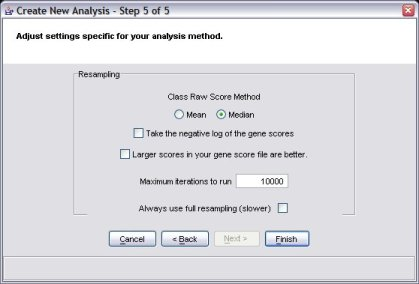

The goal of this method is the same as for ORA: to provide a p value for each gene set. The key difference lies in that ORA requires that you select a threshold for "gene selection", whereas GSR does not.
GSR uses all the gene scores for the genes in a gene set to produce a score. This means that genes that do not meet a statistical threshold for selection can contribute positively to the score. In addition, more information contained in the gene scores is preserved than in ORA, because ORA is essentially rank-based, whereas GSR uses the gene scores themselves.
In practice, ORA and GSR can yield similar results; however, we have found that GSR tends to be more robust than ORA (because there is no threshold to set) and can give interesting results in situations where ORA doesn't work as well (when no genes meet the predetermined selection threshold).
A high-level overview of the procedure is depicted below.
The steps for the resampling analysis are the same as for ORA, except for the last step.
As for ORA, you must decide whether to take the negative logarithm of the gene scores or not.
Unlike ORA, you must choose how many iterations to run. We suggest a starting value of 10,000. However, when you decide on parameters you like, we recommend a larger number of iterations (perhaps 200,000 or more). This is to get sufficient precision in the p-values to make multiple-test correction work correctly.

After pressingi the "finish" button, the analysis will run. Unlike ORA, the results will take a short while to compute. As the